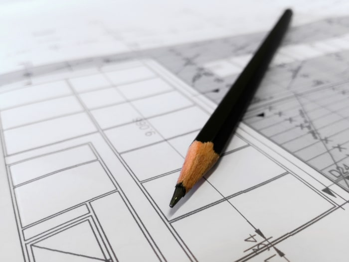

What Type of Elevator Do I Need?
One thing many property managers or owners don’t realize is that different types and classes of elevators are recommended for buildings depending on the size and types of loads they will be carrying. Smaller buildings with five or fewer stories usually require a hydraulic elevator. Taller buildings required a cabled elevator. In the elevator industry, these are called “traction elevators.”
Read More